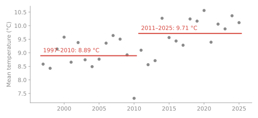
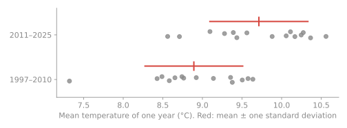
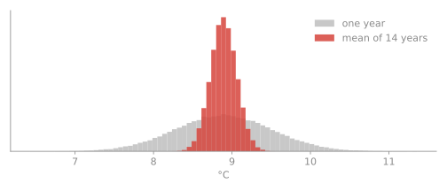
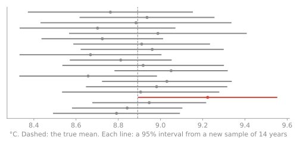
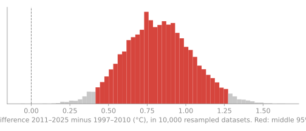
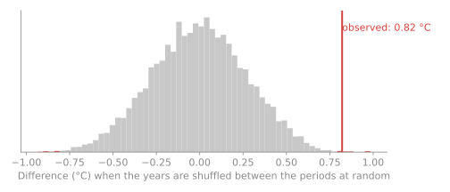
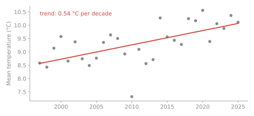
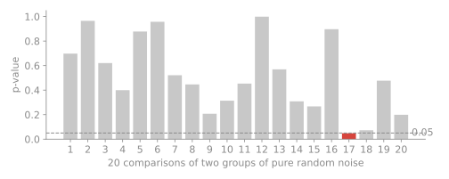

MT4008 · Week 1: questions, Git, Quarto, and the statistics you need
Thursday 5 November 2026
In 2010, an influential economics paper found that growth falls sharply when government debt passes 90% of GDP. Governments cited it.
In 2013 a student tried to reproduce it from the authors’ spreadsheet, and found rows left out of an average. The striking result shrank to a modest one.
| What goes wrong | The habit that prevents it |
|---|---|
| Different package versions | a locked environment |
| A variable you made by hand, then deleted the code | render from scratch |
| You fixed a typo in the CSV, in Excel | never edit raw data; change it in code |
C:\Users\anna\Downloads\data.csv |
relative paths: data/raw/data.csv |
| A random sample differs every run | set a seed |
| The data was never committed | commit it, and let the check catch it |
More: Week 1
| Vague | Answerable |
|---|---|
| “Look at Stockholm’s weather.” | Has Stockholm’s mean annual temperature changed since the late 1990s? |
| “Analyse electricity prices.” | How much more did southern Sweden pay than the north in 2023–25? |
| “Is AI a bubble?” | How do three signs of a bubble compare with 1929 and 2000? |
A good question names what you measure, where and when, and what you’ll compare.
<username>-assignments/
├─ hw1/
│ ├─ report.qmd ← your report: text and code, seven sections
│ ├─ report.md ← the rendered report (made by Quarto)
│ └─ data/raw/ ← data exactly as you got it, with its source
├─ hw2/ … hw5/
├─ example/ ← a worked example of a report
├─ pyproject.toml + uv.lock or renv.lock ← the locked environment
└─ .github/workflows/check.yml ← the reproducibility checkSame structure every time: a reader knows where to look, and everything generated can be remade with one command.
uv add pandas or renv::install("dplyr") + renv::snapshot(). Never edit the lockfile by hand.quarto render runs the code and writes report.md with the results and figures.hw1 next to main.You will use these four every week. The guide has every command, for VS Code.
More: How to hand in
When you open or update a pull request, GitHub starts a clean computer, installs your locked environment and renders your report.
More: When the check is red
From Probability I to statistics, in fifteen minutes.
| Probability (MT3001) | Statistics (now) |
|---|---|
| You know the model: \(X \sim N(\mu, \sigma^2)\) | You have the data: \(x_1, \dots, x_n\) |
| What will the data look like? | What was the model? And how sure are you? |
Data are observations of random variables. Your mean \(\bar x\) is one value of the random variable \(\bar X\): another sample would have given another value.
More: Statistics: the basics

The later period is 0.82 °C warmer. Is that real, or could weather alone do it?

One year varies by about 0.6 °C. The difference we found is not much larger.

\[\operatorname{Var}(\bar X) = \frac{\sigma^2}{n} \qquad \Rightarrow \qquad \operatorname{SE} = \frac{\sigma}{\sqrt n} \approx \frac{0.62}{\sqrt{14}} = 0.17 \text{ °C}\]
To halve the uncertainty, you need four times the data.
By the CLT, \(\bar X \approx N(\mu, \operatorname{SE}^2)\), so \(\;\bar x \pm 1.96\,\operatorname{SE}\;\) covers \(\mu\) in 95% of samples.

“95%” is a property of the method: about 1 in 20 intervals misses.
\[\operatorname{SE}_{\text{diff}} = \sqrt{\frac{s_a^2}{n_a} + \frac{s_b^2}{n_b}} = 0.23 \qquad 0.82 \pm 1.96 \cdot 0.23 = [0.37,\ 1.27] \text{ °C}\]
The whole interval is above zero: consistent with warming of 0.4 to 1.3 °C, not with no warming.

Resample the years with replacement, 10,000 times; the middle 95% of the differences is the interval. No formula needed, and it works for almost any statistic.
\(H_0\): no difference. Then \(\;z = \dfrac{0.82}{0.23} = 3.6\;\) and \(\;p = P(|Z| \ge 3.6) \approx 0.0003\).

By computer: shuffle the years between the periods; how often is the difference as large? About 1 in 1,000.

Slope 0.54 °C per decade (95% interval 0.27 to 0.80), \(r = 0.62\). Correlation is not causation: here the cause comes from physics, not from this data.

Twenty tests on pure noise: one comes out “significant”. Test many things and something always will. Decide what to test before you look.
<username>-assignments repository.Questions?